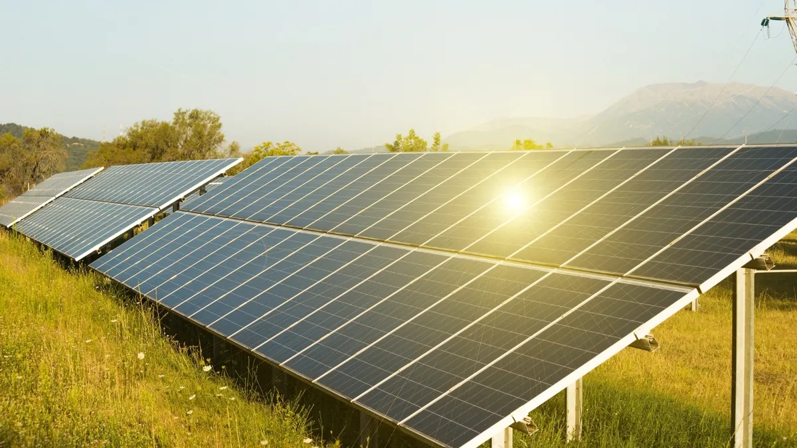
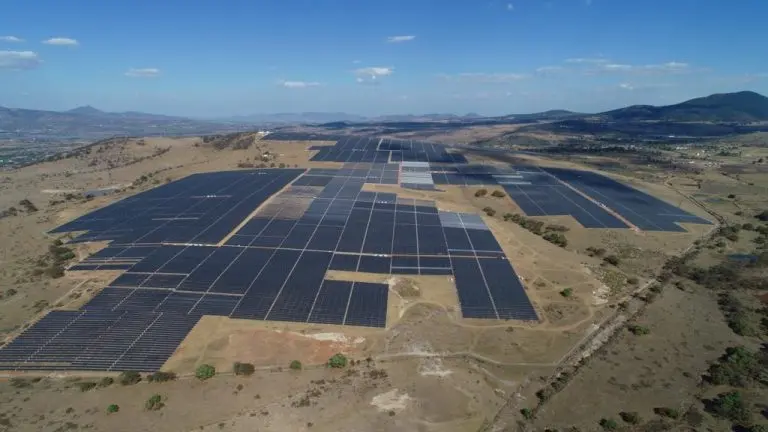
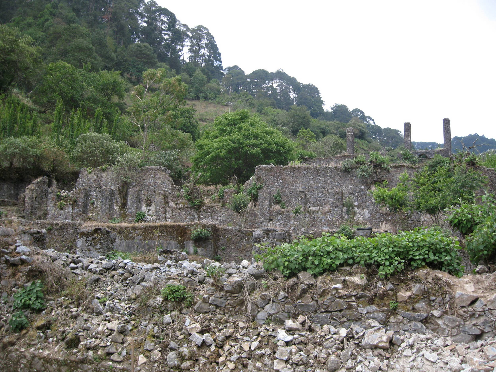

Proyectos Estratégicos y Casos de Éxito
Hidalgo atrae inversiones millonarias y lleva energía a quienes más lo necesitan.

Proyecto "Pachamama" (Dhamma Energy)
En Singuilucan y Epazoyucan. Representa una inversión de más de 6 mil millones de pesos y es un pilar para la atracción de nuevas empresas.
Inversión: +6,000 mdp

Planta Solar Nopala (Atlas)
Operativa en Nopala de Villagrán. Genera ~300 GWh/año, equivalente a la energía de 120,000 hogares.
Potencia: 129 MWp

Proyecto Los Mármoles
117 paquetes fotovoltaicos autónomos en 43 localidades rurales de Zimapán, Jacala, Pacula y Nicolás Flores.
Impacto: +117 Familias